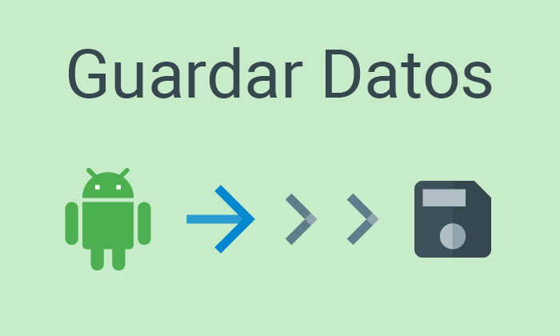
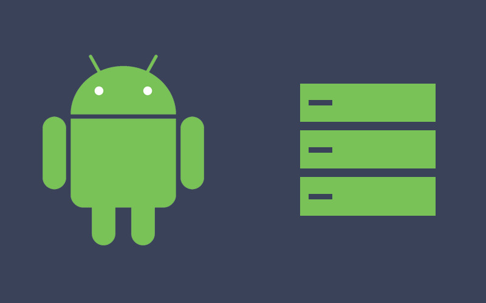

La mayoría de las apps de Android necesitan guardar datos, así sea para guardar información del estado durante el método onPause() para no perder el progreso del usuario.
guardar la configuración del usuario.
Administrar grandes cantidades de información en archivos o bases de datos.
Se representan las principales opciones de almacenamiento de datos disponibles en Android como:

Guardar paredes clave-valor de tipos de datos simples
Guardar archivos arbitrarios en el Sistema de archivos Android
Utilizar base de datos administrados por SQLite
Guardar una colección pequeña de paredes clave-valor usar SharedPreferences API.
Un objeto SharedPreferences posee un archivo que contiene pares clave-valor y proporciona métodos simples para leer y escribir.
Es administrado por el marco y puede ser privado o compartido.
No confundir con Preferences API(ayuda a crear UI).
Obtener manejador de preferencias compartidas
getSharedPreferences() - obtener múltiples archivos compartidos identificados por un nombre, desde cualquier instancia Context.
getPreferences() – desde la instancia Activity para utilizar un solo archivo compartido para la actividad, no necesario especificar nombre.
Escribir en preferencias compartidas
Para la operación de escritura en el archivo de preferencias compartidas es necesario crear un método SharedPreferences.Editor llamando a edit() en tu SharedPreferences
Pasar las claves y los valores que desees escribir con los métodos putInt() y putString()
Llamar al método commit() para guardar los cambios.
Leer de preferencias compartidas
Para recuperar valores de archivos de preferencia compartida, llamar a los métodos getInt() y getString(), dando la clave del valor que desees.
Opcionalmente, ingresar un valor predeterminado para mostrar si no se encuentra la clave antes establecida.
Consulta Espacio Libre
Se puede comprobar si hay suficiente espacio disponible sin causar una IOException llmando a getFreeSpace() o getTotalSpace().
Estor métodos proporcionan el espacio disponible actual y el espacio total del volumen de almacenamiento.
No es obligatorio comprobar el espacio disponible antes de guardar un archivo

Cómo usar el almacenamiento interno
Los archivos, son privados para tu app y cuando desinstalas la app, estos archivos se borran.
Crear y escribir un archivo privado en el almacenamiento interno
LLama a openFileOutput() mediante el nombre del archivo y modo de operación. Esto muestra un FileOutputStream.
Realiza operaciones de escritura en el archivo con write().
Cierra el flujo con close().
Leer un archivo desde el almacenamiento interno
LLama a openFileInput() y usa el nombre del archivo que deseas leer. Esto muestra un FIleInputStream.
Lee los bytes del archivo con read().
A continuación, cierra el flujo con close().
Guardar archivos de caché
utilizamos getCacheDir().
Otros métodos útiles
getFilesDir(), obtiene la ruta de acceso a tus archivos internos.
getDir(), crea un directorio o lo abre en el caso de que exista.
deleteFile(), quita un archivo guardado en el almacenamiento.
fileList(), Muestra un conjunto de archivos que tu aplicación guarda
Cómo usar el almacenamiento externo
Acceso al almacenamiento externo
Debemos obtener los permisos del sistema del READ_EXTERNAL_STORAGE o WRITE_EXTERNAL_STORAGE.
Comprobar la disponibilidad de medios
Debemos llamar a getExternalStorageState(), para comprobar que el medio esté disponible.
Este método muestra otros estados como el uso compartido de los medio, la falla total, eliminación incorrecta,etc.
Guardar archivos que se pueden compartir con otras apps.
Debemos llamar a getExternalStoragePublicDirectory() y usar el tipo de directorio que deseemos, como por ejemplo: DIRECTORY_MUSIC, DIRECTORY_PICTURES, etc
Utilizar las bases de datos
Android ofrece compatibilidad con las bases de datos SQLite.
para crear una base de datos debemos crear una sub clases de SQLiteOpenHelper y anular el método de onCreate()
Para realizar operaciones de lectura y escritura llamaremos a
getWritableDatabase() y getReadableDatabase().
Depuración de la base de datos
El android SDK incluye una herramienta de base de datos sqlite3, que permite explorar contenido de tablas, ejecutar comandos de sql.
Usar una conexión de red
Puedes usar la red para almacenar y obtener datos de tus propios servicios basados en la web.
Para realizar operaciones en la red use las clases de los paquetes:
java.net.*
android.net.*
Room (Biblioteca de persistencias Room )
Brinda una capa de abstracción para SQLite que permite acceder a la base de datos sin problemas y al mismo tiempo, aprovecha toda la potencia de SQLite.
Te ayuda a crear una memoria caché de los datos en un dispositivo que ejecute tu app.
guardar contenido en una base de datos local con Room
Base de datos: Contiene el titular de la base y sirve como punto de acceso principal para la conexión subyacente a los datos persistentes y relacionales de la app.
La clase anotada con @Database debería cumplir con:
Ser un clase abstracta que extienda Room Database
Incluir la lista de entidades asociadas con la base de datos dentro de la anotación.
Contener un método abstracto que tenga 0 argumentos y muestre la clasea anotada @Dao
Durante el tiempo de ejecución, puedes adquirir una instancia de Database llamando a RoomdatababeBuilder() o Room.inMemoryDatabaseBuilder().
Entidad: Representa una tabla dentro de la base de datos.
DAO: Contiene los métodos utilizados para acceder a la base de datos.